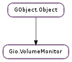

| Subclasses: | Gio.NativeVolumeMonitor |
|---|
| static | adopt_orphan_mount(mount) |
| static | get() |
| get_connected_drives() | |
| get_mount_for_uuid(uuid) | |
| get_mounts() | |
| get_volume_for_uuid(uuid) | |
| get_volumes() |
None
| Name | Parameters | Return | Description |
|---|---|---|---|
| drive-changed | Gio.Drive | Emitted when a drive changes. | |
| drive-connected | Gio.Drive | Emitted when a drive is connected to the system. | |
| drive-disconnected | Gio.Drive | Emitted when a drive is disconnected from the system. | |
| drive-eject-button | Gio.Drive | Emitted when the eject button is pressed on drive. | |
| drive-stop-button | Gio.Drive | Emitted when the stop button is pressed on drive. | |
| mount-added | Gio.Mount | Emitted when a mount is added. | |
| mount-changed | Gio.Mount | Emitted when a mount changes. | |
| mount-pre-unmount | Gio.Mount | Emitted when a mount is about to be removed. | |
| mount-removed | Gio.Mount | Emitted when a mount is removed. | |
| volume-added | Gio.Volume | Emitted when a mountable volume is added to the system. | |
| volume-changed | Gio.Volume | Emitted when mountable volume is changed. | |
| volume-removed | Gio.Volume | Emitted when a mountable volume is removed from the system. |
| Name | Type | Access |
|---|---|---|
| parent_instance | GObject.Object | r |
Bases: GObject.Object
Gio.VolumeMonitor is for listing the user interesting devices and volumes on the computer. In other words, what a file selector or file manager would show in a sidebar.
Gio.VolumeMonitor is not thread-default-context aware, and so should not be used other than from the main thread, with no thread-default-context active.
| Parameters: | mount (Gio.Mount) – a Gio.Mount object to find a parent for |
|---|---|
| Returns: | the Gio.Volume object that is the parent for mount or None if no wants to adopt the Gio.Mount. |
| Return type: | Gio.Volume |
This function should be called by any Gio.VolumeMonitor implementation when a new Gio.Mount object is created that is not associated with a Gio.Volume object. It must be called just before emitting the mount_added signal.
If the return value is not None, the caller must associate the returned Gio.Volume object with the Gio.Mount. This involves returning it in its Gio.Mount.get_volume () implementation. The caller must also listen for the “removed” signal on the returned object and give up its reference when handling that signal
Similary, if implementing Gio.VolumeMonitor.adopt_orphan_mount (), the implementor must take a reference to mount and return it in its Gio.Volume.get_mount () implemented. Also, the implementor must listen for the “unmounted” signal on mount and give up its reference upon handling that signal.
There are two main use cases for this function.
One is when implementing a user space file system driver that reads blocks of a block device that is already represented by the native volume monitor (for example a CD Audio file system driver). Such a driver will generate its own Gio.Mount object that needs to be associated with the Gio.Volume object that represents the volume.
The other is for implementing a Gio.VolumeMonitor whose sole purpose is to return Gio.Volume objects representing entries in the users “favorite servers” list or similar.
| Returns: | a reference to the Gio.VolumeMonitor used by gio. Call GObject.Object.unref () when done with it. |
|---|---|
| Return type: | Gio.VolumeMonitor |
Gets the volume monitor used by gio.
| Returns: | a GLib.List of connected Gio.Drive objects. |
|---|---|
| Return type: | [Gio.Drive] |
Gets a list of drives connected to the system.
The returned list should be freed with GLib.List.free (), after its elements have been unreffed with GObject.Object.unref ().
| Parameters: | uuid (str) – the UUID to look for |
|---|---|
| Returns: | a Gio.Mount or None if no such mount is available. Free the returned object with GObject.Object.unref (). |
| Return type: | Gio.Mount |
Finds a Gio.Mount object by its UUID (see Gio.Mount.get_uuid ())
| Returns: | a GLib.List of Gio.Mount objects. |
|---|---|
| Return type: | [Gio.Mount] |
Gets a list of the mounts on the system.
The returned list should be freed with GLib.List.free (), after its elements have been unreffed with GObject.Object.unref ().
| Parameters: | uuid (str) – the UUID to look for |
|---|---|
| Returns: | a Gio.Volume or None if no such volume is available. Free the returned object with GObject.Object.unref (). |
| Return type: | Gio.Volume |
Finds a Gio.Volume object by its UUID (see Gio.Volume.get_uuid ())
| Returns: | a GLib.List of Gio.Volume objects. |
|---|---|
| Return type: | [Gio.Volume] |
Gets a list of the volumes on the system.
The returned list should be freed with GLib.List.free (), after its elements have been unreffed with GObject.Object.unref ().